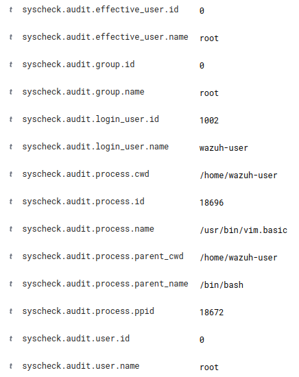
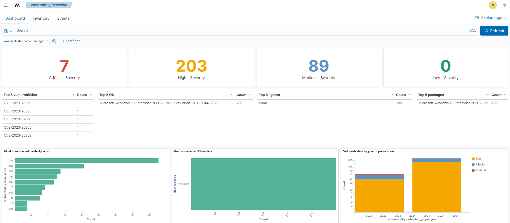
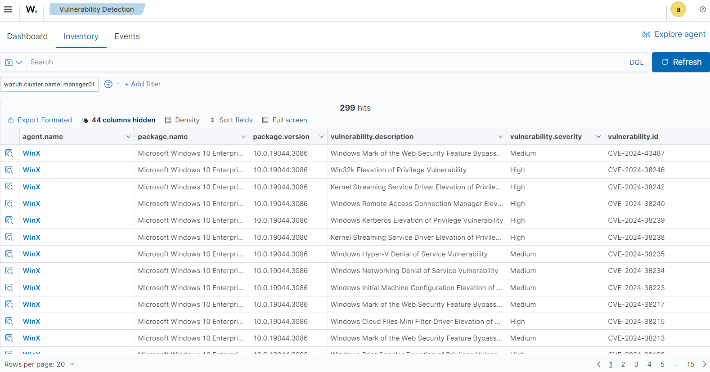
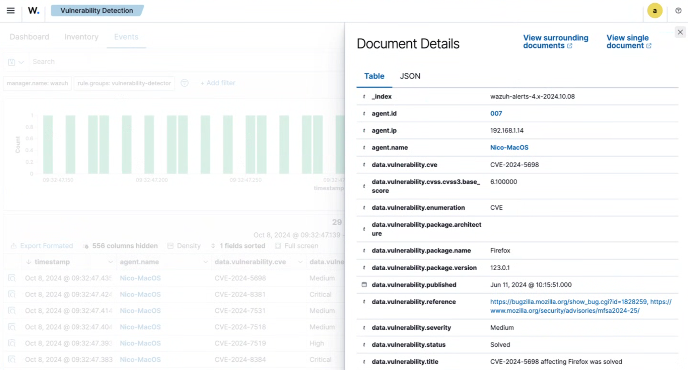
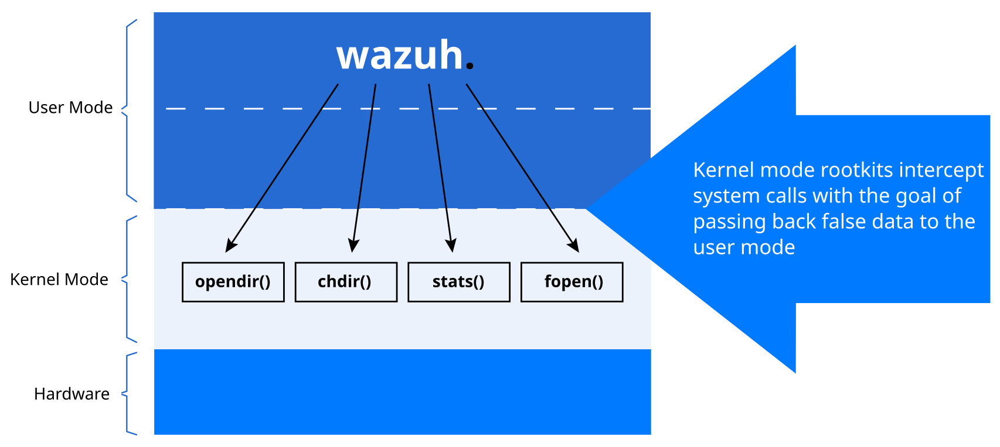
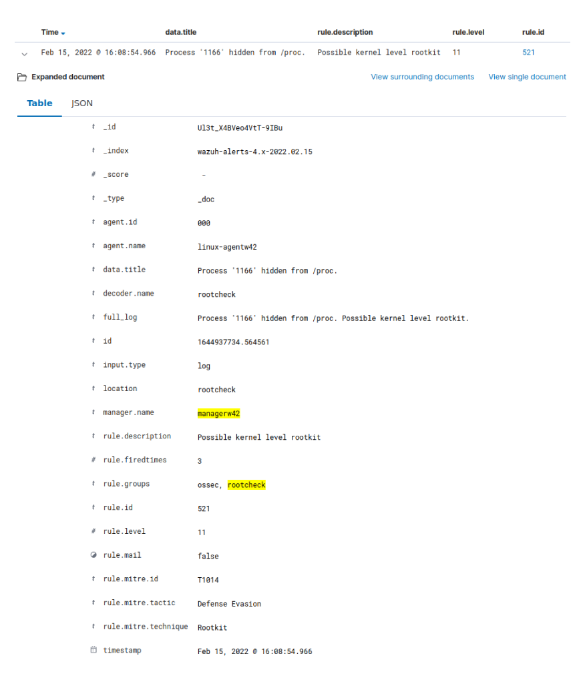

Session 4
File Integrity Monitoring
Lab Exercise 4A - Customize syscheck and trigger various FIM events
During this exercise we will create, modify and delete files in both our
windows-agentandlinux-agentusing various monitoring modes.On the
windows-agentcreate the directories we will be monitoring with syscheck
Open a Windows Powershell or command prompt as administrator
Create two test directories
mkdir C:\apple mkdir C:\orangeTo configure syscheck for the Windows agent, replace the entire
<syscheck>section in the os=”Windows” portion of the windows’ groupagent.conf:<syscheck> <disabled>no</disabled> <scan_on_start>yes</scan_on_start> <frequency>300</frequency> <directories check_all="yes" whodata="yes" report_changes="yes" tags="core,worms">C:/apple</directories> <directories check_all="yes">C:/orange</directories> </syscheck>The above enables syscheck FIM on Windows agents, such that a periodic syscheck scan of
C:\orangewill take place shortly after the start/restart of the Wazuh agent, and then every 300 seconds thereafter.The
C:\appledirectory will be monitored in real time for all possible kinds of file changes, while theC:\orangedirectory will only be periodically scanned for changes. Changes to existing text files inC:\applewill trigger an alert that includes the details of the actual text that was changed.You could then restart your Wazuh Windows agent to cause the new config to be picked up immediately, or just wait a couple of minutes for the Windows agent to pick up the change automatically and restart itself.
In the Windows agent log, you should see a couple of entries like this accounting for the new syscheck monitoring of your two test directories:
2022/06/10 13:00:47 wazuh-agent: INFO: (6003): Monitoring path: 'c:\apple', with options 'size | permissions | owner | group | mtime | inode | hash_md5 | hash_sha1 | hash_sha256 | attributes | report_changes | whodata'. 2022/06/10 13:00:47 wazuh-agent: INFO: (6003): Monitoring path: 'c:\orange', with options 'size | permissions | owner | group | mtime | inode | hash_md5 | hash_sha1 | hash_sha256 | attributes | scheduled'.At this point, add, modify, and delete files in these two test directories on the Windows agent.
You may easily create or modify files by running the following Powershell commands:
Set-Content -Path 'C:\apple\date.txt' -Value $(Get-Date) Set-Content -Path 'C:\orange\date.txt' -Value $(Get-Date)Watch your search results in Wazuh dashboard for the query text
apple orange, to see syscheck events as they appear.Notice that alerts about changes in
c:\appleshow up promptly, while alerts about changes inc:\orangeare not reported until the next every-300-second syscheck scan.Alternative Linux FIM lab
Ubuntu systems (like our
linux-agent) do not have theauditdservice installed by default, and this is required forwhodatato work, so install it now on linux-agent.apt -y install auditd systemctl start auditdCreate on your linux-agent an
/appleand an/orangedirectory:mkdir /apple /orange /pearReplace the entire
<syscheck>section in thelinuxgroup’sagent.conffile with this:<syscheck> <disabled>no</disabled> <scan_on_start>yes</scan_on_start> <frequency>300</frequency> <directories check_all="yes" whodata="yes" report_changes="yes">/apple</directories> <directories check_all="yes" realtime="yes">/orange</directories> <directories check_all="yes">/pear</directories> </syscheck>Make changes in the
/appleand/orangeand/peardirectories and watch for them to be accounted for in Wazuh dashboard. Search forsyscheck.Watch especially for the who-data fields. They start with
syscheck.audit
Suppressing FIM false positives when a server is in a maintenance window.
To avoid false positive noise created by changes that are made to a system’s monitored files during a maintenance window, you can create a new agent group with a configuration that disables FIM. Then you could add agents into this group when they enter a maintenance window and remove them from the group when their maintenance window closes.
For example, you could create a new agent group called
fim-disabledand set the content of itsagent.conffile to be:<agent_config> <syscheck> <disabled>yes</disabled> </syscheck> </agent_config>Note that upon including an agent as a member of the
fim-disabledgroup, that will become the last group in the agent’s group list, and thus it will take precedence over FIM settings defined in other groups that the agent is a part of.When the maintenance window has passed for the agents you previously added to this group, simply remove them from the
fim-disabledgroup. The agents will then automatically restart and will silently create a new FIM baseline.Another possibly complementary strategy would be create an agent group called
maintenanceand then set itsagent.conffile to:<agent_config> <labels> <label key="state">maintenance</label> </labels> </agent_config>This would cause a new field
agent.labels.stateto be added to all alerts from any agent you put into themaintenancegroup, only while it is in that group. Among other things, this would allow you to use the following criteria in the integrity monitoring dashboard to exclude FIM events that took place while an agent was in a maintenance window.not agent.labels.state: maintenanceYou might want to consider what other kinds of states a given server might enter and exit over time that would be meaningful to account for via agent labels in this way.
Vulnerability Detection
Lab Exercise 4B - Syscollector and Vulnerability-Detection
Of the many software packages installed on each of your endpoints, which ones have known vulnerabilities that might impact your security posture? Wazuh helps you answer this question with the
syscollectorandvulnerability-detectionmodules.On each agent,
syscollectorcan scan the system for the presence and version of all software packages. This information is submitted to the Wazuh manager where it is stored in an agent-specific database for later assessment.Within the Wazuh server, the
Vulnerability Detectionmodule correlates the software inventory data with vulnerability content documents to detect vulnerable software on the monitored endpoint. These documents are Common Vulnerabilities and Exposures (CVE) records that are available in our Cyber Threat Intelligence (CTI) platform. On the CTI platform, we aggregate vulnerability data from diverse sources like operating system vendors and vulnerability databases, consolidating it into a unified, reliable repository.On the Wazuh Server, the
vulnerability-detectionmodule is enabled by default to periodically scan the collected inventory data for known vulnerabilities.Wazuh includes a dedicated Dashboard for the Vulnerability Detection capability, as well as an Inventory tab (that shows current vulnerabilites for all the agents) and an Events tab(which shows the alerts generated when a new vulnerability is detected or solved).
For the full documentation concerning this feature, see:
https://documentation.wazuh.com/current/user-manual/reference/ossec-conf/vuln-detector.html
https://documentation.wazuh.com/current/user-manual/capabilities/vulnerability-detection
On your Wazuh interface, navigate to Agent Management and select Groups. Click on the edit (pencil) icon from your windows group, and set the
syscollectorinterval to 2 minutes, as shown in the following example. Click on the Save button to set the changes and have the agent restart automatically.<!-- System inventory --> <wodle name="syscollector"> <disabled>no</disabled> <interval>2m</interval> <scan_on_start>yes</scan_on_start> <hardware>yes</hardware> <os>yes</os> <network>yes</network> <packages>yes</packages> <ports all="no">yes</ports> <processes>yes</processes> <!-- Database synchronization settings --> <synchronization> <max_eps>10</max_eps> </synchronization> </wodle>Ensure your windows-agent is running a vulnerable package: using Chrome, download and install this known vulnerable outdated version of VLC:
https://get.videolan.org/vlc/3.0.0/win32/vlc-3.0.0-win32.exeReview the Wazuh Manager logs:
The
vulnerability-detectionmodule generates logs on the Manager and they can be seen by going to the Hamburger menu ( ☰ ), selecting the Server management section, clicking on Logs, and selectingwazuh-modulesd:vulnerability-scanneroption from the first drop down list.Oct 10, 2024 @ 10:06:36.000 wazuh-modulesd:vulnerability-scanner INFO Initiating update feed process Oct 10, 2024 @ 10:28:16.000 wazuh-modulesd:vulnerability-scanner INFO Triggered a re-scan after content update Oct 10, 2024 @ 10:28:16.000 wazuh-modulesd:vulnerability-scanner INFO Feed update process completedYou may also see the syscollector activity on the agents’ logs:
grep "syscollector:" /var/ossec/logs/ossec.log2022/06/10 15:45:58 wazuh-modulesd:syscollector: INFO: Module started. 2022/06/10 15:45:58 wazuh-modulesd:syscollector: INFO: Starting evaluation. 2022/06/10 15:45:58 wazuh-modulesd:syscollector: INFO: Evaluation finished.Review the alerts in the Wazuh Dashboard:
From the Hamburger menu ( ☰ ) go into the Threat intelligence section, select the Vulnerability Detection option. You can use the Explore agent button on the top right corner to apply a filter.

Click on the Inventory tab to view current Vulnerabilities.

Select the Events tab to view the related alerts.

From the Hamburger menu ( ☰ ) go into the Server management section, and click on Dev Tools. Explore possible Wazuh API syscollector-related queries based on these examples:
GET /syscollector/002/os GET /syscollector/001/netiface GET /syscollector/002/netproto GET /syscollector/000/netaddr GET /syscollector/003/ports GET /syscollector/003/processes?select=pid,name GET /syscollector/002/packagesEach request must be submitted by pressing on the green triangle that appears on the right edge of the highlighted request line.
Take time to look over the online documentation about the syscollection section of the Wazuh API:
https://documentation.wazuh.com/current/user-manual/api/reference.html#tag/Syscollector
This is a powerful tool that puts all sorts of data, configuration details, and state information at your fingertips once you know how to ask for it. With the right parameters, not only can you query these data sources, but you can select, filter, sort, and limit the results.
Rootkit Detection
A rootkit is a program that can hide itself as well as running processes, file or network connections from the host where it is running. The malicious program can change access rights of files and directories and its aim is to run “incognito”, meaning in the background for as long as possible. The purpose for the intruder is to gain full access to the victim’s system all the time. The only precondition is that a rootkit needs to be installed with root privileges in the first place. This might be the biggest challenge for the attacker. We distinguish between two kinds of rootkits:
User-mode rootkit: A user-mode rootkit covertly replaces common UNIX binaries or libraries with infected versions to hide its existence and to gain root privileges if needed.
Kernel-mode rootkit: A kernel-mode rootkit operates on the system level and modifies or replaces the kernel which may have been affected in the boot process.
The typical characteristics of a rootkit are:
stealth-functionality: it aims to hide the traces of the intruder by manipulating processes, open files and network activity
backdoor: it aims to gain remote access to the target system, e.g. through a SSH tunnel.
sniffer: it also has the possibility of wiretapping and intercepting various system components, e.g through the network or a keylogger.
How can Wazuh detect rootkits?
Without using a host-based intrusion detection system it is almost impossible to detect rootkits on a system. Simple file integrity checking alone is not going to detect a rootkit. Wazuh monitors changes of files, directories and commands by performing file integrity checks on these files. Wazuh’s syscheck module compares current checksums, so called hashes, of files with known “good” hashes. This means with the initial installation of Wazuh (agent or manager) a first syscheck run is triggered and creates a database with checksums of all files and directories that should be monitored. What should be monitored is specified in the ossec.conf, Wazuh’s main configuration file. The directories on UNIX systems that are hashed by default include:
/bin
/usr/bin
/sbin
/usr/sbin
/etc
/boot
Basically every directory that includes binaries, if modified with malicious code could contain a rootkit. The /etc directory contains all the config files that are necessary to run programs. The /var filesystem is not included because it usually is the place where all systemwide log files are stored, monitoring this directory would cause a lot of alerts because log files usually change very often. Every time a file changes it automatically generates a new checksum. The interval of each syscheck is 43200 seconds, which translates to every 12 hours. The interval is measured in seconds but is easily configurable in the Wazuh config. Wazuh’s rootkit detection module looks specifically for traces of rootkits, malware, and trojans on configured systems. There are two other configuration files responsible for detecting a rootkit within Wazuh. The rootcheck module which works similar to the aforementioned syscheck module continuously parses the following text files during a rootcheck analysis. Below is an example of how a typical config for Rootkit detection looks like
<rootcheck>
<frequency>3600</frequency>
<rootkit_files>/var/ossec/etc/shared/rootkit_files.txt</rootkit_files>
<rootkit_trojans>/var/ossec/etc/shared/rootkit_trojans.txt</rootkit_trojans>
</rootcheck>
rootkit_files.txt: it contains a list of file names known to be user mode rootkits
rootkit_trojans.txt: it contains signatures that known rootkits have embedded in the binary file, by default the binaries in /bin, /sbin, /usr/bin and /usr/sbin are searched.
The rootcheck module extracts strings from binaries and uses a Regular Expression (RegEx) to identify a match. Wazuh uses a signature-based approach because many rootkits contain a unique string in trojaned versions of Linux utilities. As previously mentioned the intention of a rootkit is to hide its existence and any traces for as long as possible. Therefore popular scenarios would be to modify the “ps” or the “netstat” utility. The ps command displays a list of the current running processes, a modified version would hide the rootkit processes running in the background. The netstat utility displays all open network connections, a malicious version could hide outgoing connections to a Command & Control (C&C) server, being the target server of the intruder. Additional signatures of new rootkits, can be added at any time to the rootkit_trojans.txt file. The rootcheck module generates an alert if “there’s a discrepancy in information about a file, process, port or network interface. The interval of the rootcheck module may vary from the duration of the syscheck module, they act independently.
Following is an excerpt of the rootkit_files.txt
# T.R.K rootkit
usr/bin/soucemask ! TRK rootkit ::/rootkits/trk.php
usr/bin/sourcemask ! TRK rootkit ::/rootkits/trk.php
# Volc Rootkit
usr/lib/volc ! Volc Rootkit ::
usr/bin/volc ! Volc Rootkit ::
Below is an example of the rootkit_trojans.txt
ps !/dev/ttyo|\.1proc|proc\.h|bash|^/bin/sh!
netstat !bash|^/bin/sh|/dev/[^aik]|/prof|grep|addr\.h!
The Wazuh rootkit detection engine performs the following checks:
1.Read the rootkit_files.txt which contains a database of rootkits and files commonly
used by them. It will try to stats, fopen and opendir each specified file. We use all
these system calls because some kernel-level rootkits hide files from some system calls.
The more system calls we try, the better the detection. This method is more like an
anti-virus rule that needs to be updated constantly. The chances of false-positives are
small,but false negatives can be produced by modifying the rootkits.
2.Read the rootkit_trojans.txt which contains a database of signatures of files trojaned by rootkits.
This technique of modifying binaries with trojaned versions was commonly used by most of the popular
rootkits available. This detection method will not find any kernel level rootkit or any unknown rootkit.
3.Scan the /dev directory looking for anomalies. The /dev should only have device files and the Makedev script.
A lot of rootkits use the /dev to hide files. This technique can detect even non-public rootkits.
4.Scan the whole filesystem looking for unusual files and permission problems. Files owned by root, with write
permission to others are very dangerous, and the rootkit detection will look for them. Suid files,hidden
directories and files will also be inspected.
5.Look for the presence of hidden processes. We use getsid() and kill() to check if any pid is being used or not.
If the pid is being used, but “ps” can't see it, it is the indication of kernel-level rootkit or a trojaned
version of “ps”. We also verify that the output of kill and getsid are the same.
6.Look for the presence of hidden ports. We use bind() to check every tcp and udp port on the system.
If we can't bind to the port (it's being used), but netstat does not show it, we probably have a rootkit installed.
7.Scan all interfaces on the system and look for the ones with “promisc” mode enabled. If the interface is in
promiscuous mode, the output of “ifconfig” should show that. If not, we probably have a rootkit installed.
Detecting User-Mode rootkits with Wazuh
Wazuh performs several tests to detect rootkits, one of them is to check the hidden files in /dev. The /dev directory should only contain device-specific files such as the primary IDE hard disk (/dev/hda), the kernel random number generators (/dev/random and /dev/urandom), etc. Any additional files, outside of the expected device-specific files, should be inspected because many rootkits use /dev as a storage partition to hide files. In the following example we have created the file .hid which is detected by Wazuh and generates the corresponding alert.
/dev
touch .hid
ls -a /dev | grep '^\.'
.
..
.hid
Afterwards we restart the wazuh-manager using systemctl restart wazuh-manager to force rootcheck to verify this folder and take a close look on the alerts.log by issuing this command:
tail -f /var/ossec/logs/alerts/alerts.log
** Alert 1460661371.476343: mail - ossec,rootcheck
2016 Apr 14 19:16:11 manager->rootcheck
Rule: 510 (level 7) -> 'Host-based anomaly detection event (rootcheck).'
File '/dev/.hid' present on /dev. Possible hidden file.
We can see that Wazuh detected our fake hidden file, by scanning the /dev file system for hidden files which usually are not supposed to be there.
Detecting Kernel-Mode rootkits with Wazuh
There are two separate Wazuh modules that run on every agent, those are called Syscheck and Rootcheck. These modules perform various tests that help in detecting both user mode and kernel mode rootkits. While Rootcheck performs most of the checks, syscheck is key when looking for user mode malicious binary files.
Below is a table for Wazuh’s detection methods for user mode and kernel mode rootkits:
User mode rootkits:
Syscheck |
Regular hash comparison of files in /bin, /sbin, /usr/sbin/, /etc and others |
||
Rootcheck |
Detecting Hidden files |
||
Scan /dev anomalies |
|||
Detecting Hidden Processes |
Command |
System calls |
|
Process hidden by trojaned ps |
ps |
setsid(), getpdgid(), kill() |
|
Detecting Hidden Ports |
Command |
System calls |
|
Process hidden by trojaned netstat |
netstat |
bind() |
|
Other |
|||
|
|||
Kernel mode rootkits:
Rootcheck |
Detecting Hidden files |
System calls |
|
Files hidden by intercepting sys calls |
stat(), opendir(), readdir() |
||
Detecting Hidden Processes |
Command |
System calls |
|
Process hidden by intercepted sys calls |
ps |
setsid(), getpdgid(), kill() |
|
Detecting Hidden Ports |
Command |
System calls |
|
Process hidden by intercepted sys calls |
netstat |
bind() |
|
Other |
System calls |
||
Database of known rootkits - rootkit_files.txt |
stat(), fopen(), opendir() |
||
This shows that Wazuh uses system calls to detect both User mode and Kernel mode rootkits. Particularly interesting to use will be the system calls setsid(), getpid() and kill() as those are used to detect hidden processes from the process listing utility “ps”. Rootcheck attempts to detect a rootkit by issuing those system calls and comparing the results to the output from ps. Rootcheck calls setsid(), getpgid() and kill() for all process IDs and if any of them finds a process that is not listed by ps then rootcheck logs an alert about a possible user mode rootkit or a “trojaned” version of the ps utility.
A kernel mode rootkit makes changes to the kernel with the goal of intercepting system calls. It can manipulate information sent to and from the user mode tools. Wazuh is a user mode application and thus also relies on data passed to it from the kernel. The rootcheck module looks for possible intercepted system calls that may be hiding files and processes.
In the picture below we can see that Wazuh looks for the existence of hidden files used by known rootkits.

The list of files from known rootkits that rootcheck attempts to locate can be found on the Wazuh manager in /var/ossec/etc/shared/rootkit_files.txt The rootcheck module tries to open each file by using the system calls opendir(), chdir(), stats() and fopen(). We can see that rootcheck is able to open a file with the opendir() and chdir() system calls but unable to do with stats() or fopen(). This may be an indication that a rootkit has intercepted the stats() and fopen() system calls. Following this, rootcheck would report a possible kernel level rootkit based on that discrepancy. However, this d etection method will have limited success since the file names must be present in rootkit_files.txt or rootcheck will fail to detect this. We have previously mentioned that rootkits try to hide its existence by manipulating the process listing. A user-mode rootkit would replace the original “ps” binary with a modified one that is capable of hiding its existence. However, this would not be very efficient because Wazuh’s syscheck module would detect this bogus binary during the file integrity checks or it may be detected by the rootcheck module when comparing the output from the ps utility to the output from three different system calls that query running processes. As shown in the table above we can see that processes hidden by a kernel mode rootkit would be detected by the system calls getsid(), getpid() and kill() and comparing their outputs. Rootcheck cycles through all possible process IDs. If getsid() finds the process but getpgid() or kill() don’t then it may indicate a kernel level rootkit which has intercepted a system call. Resulting from this, Wazuh will automatically generate an alert for the suspect process.
Prevention and mitigation of a rootkit
As previously mentioned in order for a rootkit to exist, it requires root (administrator) privileges to be installed. To prevent a rootkit from existing on a system, it is essential that the administrator or root user only installs packages that are known to be harmless. A compromise of Linux core packages, such as ps, netstat, stat utility is very unlikely, because a modification would be noticed during regular code reviews. If the distributor of a new package or Windows executables provides a checksum (sha-2/md5) to its package, it is recommended to validate the hash before installing the desired package. This is essentially what the syscheck module does and guarantees the downloaded package has the same content as its origin. If Wazuh or any other HIDS detects a malicious file as a rootkit, it is recommended to remove the file and replace it through a new installation of said binary. When in doubt it is recommended to contact the WAZUH mailing list or to file a bug report for a potential false-positive alert.
Lab Exercise 4C - Rootkit Detection
In this exercise you will safely implement a kernel-mode rootkit as a proof-of-concept for Wazuh rootkit detection. This rootkit is able to hide itself from the kernel module list as well as hide selected processes from being visible to “ps”. However, Wazuh will still detect it using the system calls “setsid()”, “getpid()”, and “kill()”. This makes Wazuh a very effective Linux rootkit detection application by looking for general low-level hiding behavior.
For this lab the Diamorphine kernel module has already been compiled for you and is waiting in /tmp/diamorphine.ko to be inserted.
1: Log on to your linux-agent system and become root.
2: Download, build, and load the rootkit kernel module and put it to use
git clone https://github.com/wazuh/Diamorphine.git cd Diamorphine sed -i 's/asm\/uaccess\.h/linux\/uaccess.h/' diamorphine.c make insmod diamorphine.koThe kernel-level rootkit “diamorphine” is now installed on this system! By default it is hidden so we wouldn’t be able to detect it by running “lsmod”. Only with a special “kill” signal can we make diamorphine unhide itself, try it out:
lsmod | grep diamorphine kill -63 509 lsmod | grep diamorphinediamorphine 13155 0kill -63 509 lsmod | grep diamorphineIn the case of Diamorphine, any attempt to send kill signal -63 to any process whether it exists or not, will toggle whether the Diamorphine kernel module hides itself.
This rootkit also allows you to hide a selected processes from being seen by the “ps” command for example. Here we will find the pid of rsyslogd and then hide it. Your rsyslogd pid will be different than the one in this example. Substitute the correct pid for 535 below.
ps auxw | grep rsyslog | grep -v greproot 535 0.0 0.3 218744 3736 ? Ssl Dec07 0:00 /usr/sbin/rsyslogd -nkill -31 535 ps auxw | grep rsyslog | grep -v grep3: In your linux-agent’s
/var/ossec/etc/local_internal_options.conffile, enable debug logging :echo "syscheck.debug=2" > /var/ossec/etc/local_internal_options.conf echo "agent.debug=2" >> /var/ossec/etc/local_internal_options.conf4: Next configure your linux-agent to run rootcheck scans every 5 minutes and to disable syscheck FIM and policy enforcement scans to make the lab less noisy. To accomplish this, replace the entire
<rootcheck>section in the linux group’s/agent.conffile on the manager, with the following, Also, in the<syscheck>section, set<disabled>to yes. Then save the configuration.<rootcheck> <disabled>no</disabled> <frequency>300</frequency> <skip_nfs>yes</skip_nfs> <check_unixaudit>yes</check_unixaudit> <check_files>yes</check_files> <check_trojans>yes</check_trojans> <check_dev>yes</check_dev> <check_sys>yes</check_sys> <check_pids>yes</check_pids> <check_ports>yes</check_ports> <check_if>yes</check_if> </rootcheck>Now our next rootcheck scan should run shortly. It should notice the rsyslogd process which we have hidden with Diamorphine and alert about it.
5: Pay close attention to
ossec.logon your linux-agent. You will see the following information being displayed then the rootcheck scan runs:2016/04/09 14:15:49 rootcheck: DEBUG: Condition ANY. 2016/04/09 14:15:49 rootcheck: DEBUG: Going into check_rc_dev 2016/04/09 14:15:49 rootcheck: DEBUG: Starting on check_rc_dev 2016/04/09 14:15:49 rootcheck: DEBUG: Going into check_rc_sys 2016/04/09 14:15:49 rootcheck: DEBUG: Starting on check_rc_sys 2016/04/09 14:15:49 rootcheck: DEBUG: Going into check_rc_pids 2016/04/09 14:16:07 wazuh-agentd: DEBUG: Sending agent notification.We can see that the
rootcheckdprocess is running some check on the /dev filesystem (check_rc_dev), as well as running some syscall checks (check_rc_sys) as well as, and this is probably the most interesting part for our rootkit, running the checks on the the process id’s (check_rc_pids).
Also try to find the same event in Wazuh dashboard by searching for
decoder.name:rootcheck:
7: Remember, if you run the same
kill -31command as before against rsyslogd, the rsyslogd process will become visible again. The subsequent rootcheck scan would no longer alert about it.8: Remove the rootkit from your linux-agent since we don’t need it any longer.
rmmod diamorphine kill -63 509 rmmod diamorphine